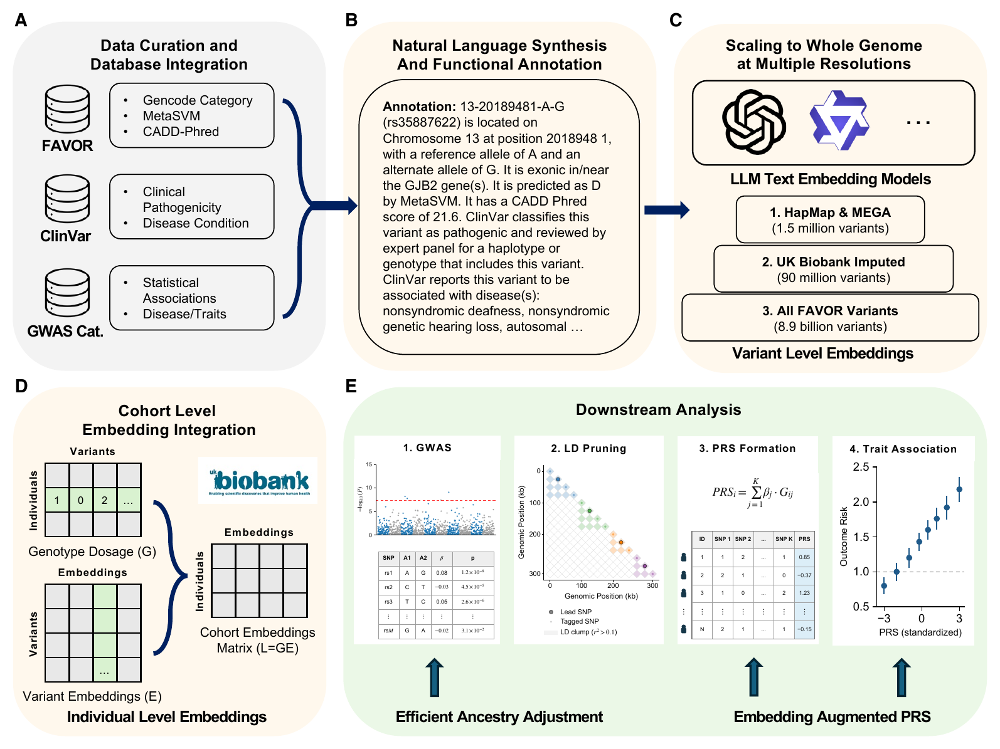
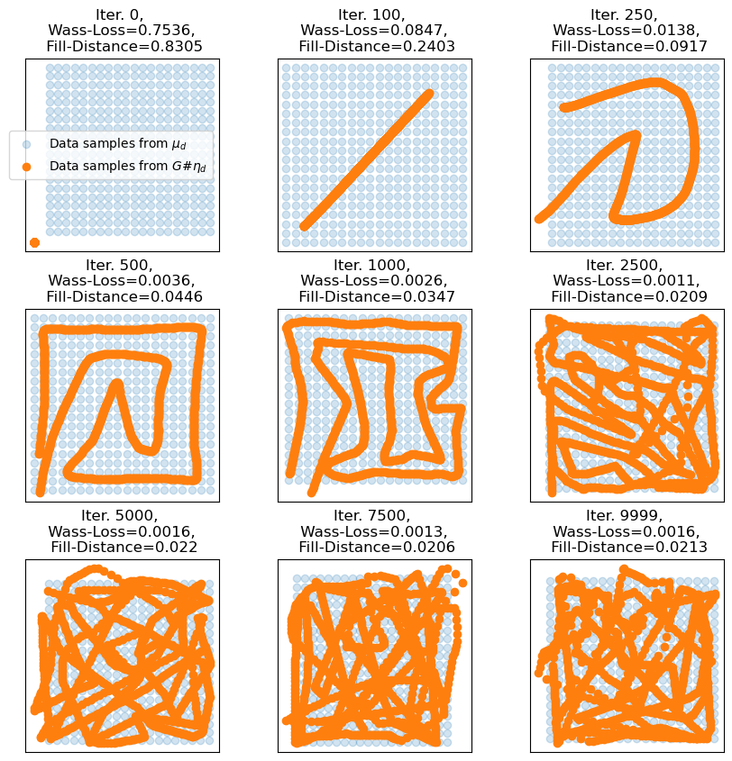
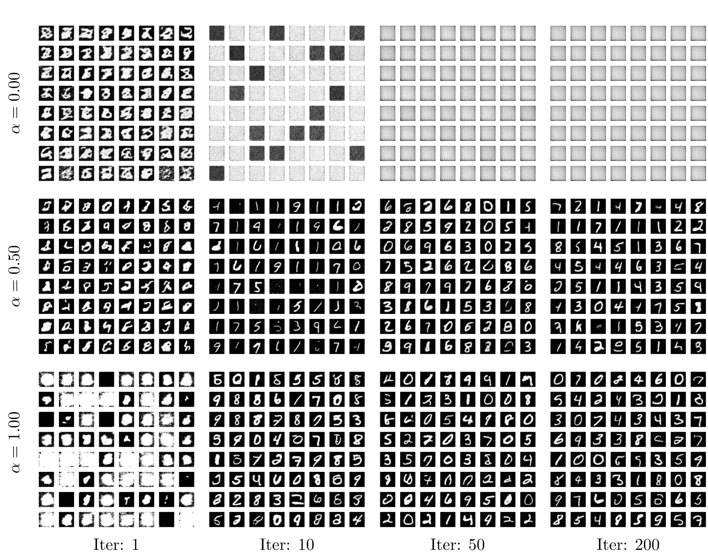

Project 1: Incorporating LLM Embeddings for Variation Across the Human Genome
Genomics · LLM embeddings
Hongqian Niu, Jordan G. Bryan, Jacob Williams, Hufeng Zhou, Haoyu Zhang, Xihao Li, Didong Li

A systematic framework for generating variant-level embeddings across the entire human genome
using large language models, built from curated annotations (FAVOR, ClinVar, GWAS Catalog) at
scales up to ~9 billion possible variants. Applied to embedding-augmented polygenic risk score
prediction on UK Biobank data.
arXiv ·
Hugging Face
Project 2: Deep Generative Models: Complexity, Dimensionality, and Approximation
Statistical/ML theory
Kevin Wang, Hongqian Niu, Yixin Wang, Didong Li

A theoretical study of how generative networks approximate distributions on manifolds,
showing that arbitrarily low-dimensional latent inputs (below the manifold's intrinsic
dimension) still suffice, at the cost of a super-exponential complexity trade-off between
approximation error, dimensionality, and model size.
JMLR
Project 3: Can Generative Artificial Intelligence Survive Data Contamination? Theoretical Guarantees under Contaminated Recursive Training
Statistical/ML theory
Kevin Wang, Hongqian Niu, Didong Li

A theoretical analysis of generative models trained recursively on data contaminated by
earlier model-generated outputs, establishing guarantees on when and how such training
remains stable versus degrades (model collapse).
arXiv